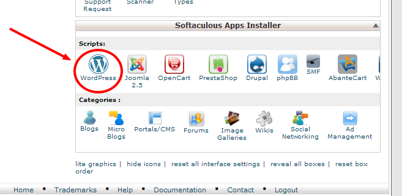

O que vamos fazer?
- Conhecer um pouco o WordPress
- Comunidade
- Diferenças entre o .com e .org
- Instalar o WordPress
- O que são plugins e temas
- SEO
Só para blogs?
Quem usa?
- Observador
- Eco.pt
- Katy Perry
- Usain Bolt
Temas
ThemeForest, ElegantThemes
Plugins
Adicione funcionalidades ao seu site
wordpress.org/plugins
- Primeira versão em 2003
- Neste momento corre em mais de 27% da internet
- A plataforma mais popular de blog, mas também...
- Um poderoso gestor de conteúdos
- Completamente grátis
- Projecto open-source
- Voluntários à volta do mundo estão constantemente a desenvolver e a melhorar as funcionalidades do sistema.
- Milhares de plugins e temas
- Open-Source
- Fácil de utilizar (editor, plugins, etc)
- Flexivel
- Suporte pela comunidade
- Amigo de motores de busca: standards!
- Controlo do vosso próprio conteúdo: importe e exporte os seus artigos
WordPress.com
É um serviço de alojamento de sites que usa o WordPress como plataforma. Pertence à Automattic.
WordPress.com é uma plataforma onde podem ter o vosso site gratuitamente, mas com algumas limitações.
Podem até fazer um upgrade para um plano pago, tendo mais espaço em disco por exemplo.
- Limitado aos temas disponíveis no wordpress.com
- Sem plugins próprios
- Limitação de espaço em disco
- Não há acesso FTP
- Limitação no conteúdo
Vantagens
- Não é necessário instalar o WordPress, apenas criar uma conta;
- Não tem custos (excepto se quisermos usar um domínio próprio);
- O alojamento está incluído;
- Menos trabalho de manutenção;
- Atualização automática;
- Backup automático;
- Não exige conhecimentos técnico.
Desvantagens
- Personalização limitada;
- Funionalidades limitadas, pois não é permitido a instalação de plugins e o espaço é limitado;
- É difícil monetizar o blog ou site
.org
- Podem fazem o download gratuitamente e alojar num servidor.
- Vai precisar de comprar um alojamento.
- Completo controlo do seu site / conteúdo.
WordPress.org
É o centro de uma comunidade mundial utilizada por milhões de pessoas, que disponibiliza o WordPress, uma ferramenta de publicação online, o software que podes transferir para criar o teu site.
Vantagens
- É um software open-source e é o resultado do contributo de milhares de pessoas;
- Permite total personalização;
- Permite instalar qualquer tema;
- Permite instalar qualquer plugin;
- As atualizações podem ser manuais ou automáticas;
- Possibilita a otimização para motores de busca (SEO);
- Permite o controlo total do site.
Desvantagens
- Exige algum conhecimento técnico, embora seja muito fácil de utilizar;
- Necessitamos de um serviço de alojamento para o site;
- Implica alguma preocupação com a segurança.

Como Instalar o WordPress
- O que é necessário?
- Como devo fazer?
- Quanto vai custar?
Mas antes temos de definir qual o WordPress adequado.
Instalar o WordPress
Há mais de uma maneira de instalarmos o WordPress, por exemplo:
- Podemos transferir o WordPress e carrega-lo para o servidor através de uma aplicação de FTP;
- Também podemos usar um serviço de auto-instalação que a maior parte dos serviços de alojamento têm.
Utilizando um serviço de auto-instalação
Após selecionar o WordPress teremos que inserir alguns dados:
- domínio;
- nome do site;
- descrição;
- dados de utilização da conta (usa sempre um username diferente de "admin" e uma password complexa);
- escolher a língua;
- não é necessário preocupar com a escolha de tema nesta fase;
Após alguns segundos terás o WordPress instalado e podes aceder ao teu site.
Agora é necessário fazer algumas configurações no WordPress. Para isso temos de aceder ao painel de controlo usando o link indicado no final da instalação. As configurações principais encontram-se no menu da esquerda, em "Opções".
Geral
Nesta secção definimos algumas características gerais do site. Podemos alterar o título mas não deves, este representa o nome do teu projeto. Mas podemos alterar a descrição caso queiramos uma apresentação diferente.
Convém ser uma frase curta e relacionado com o projeto, pois esta irá afetar a forma como o Google interpreta o teu site.
Adiciona um endereço adequado no email.
Podemos ainda configurar os formatos de data, hora, fuso horário e ainda alterar a língua.
Quando terminares as configurações, guarda as alterações.

Perfis de Utilizadores
Esta é uma secção importante que deve ser gerida com cuidado. De raiz temos 5 tipos de utilizadores:
- Administrador: Tem acesso a todas as funcionalidades e opções.
- Editor: Pode criar e eliminar páginas, gerir e publicar artigos e carregar imagens e outros ficheiros. Pode ainda rever e publicar artigos submetidos por outros.
- Autor: Pode escrever e publicar os seus artigos, incluindo carregar e inserir imagens.
- Colaborador: Pode escrever artigos, mas não os pode publicar. Têm de ser submetidos para revisão.
- Subscritor: Pode gerir o seu perfil, ler o que publicam e deixar comentários.
Escrita
Em Escrita irás determinar, mais tarde, qual a categoria por omissão dos artigos, sendo que começam por estar ‘Sem categoria’, enquanto não é criada e selecionada outra.
As categorias e etiquetas são elementos importantes no WordPress. Servem para agrupar e classificar os artigos. As categorias devem ser usadas para organizar o conteúdo e as etiquetas para o descrever.
Leitura
Em Opções de leitura indicas o que a tua página inicial vai mostrar, se os artigos mais recentes (estilo blog) ou uma página fixa. Mas é uma opção que defines mais tarde, após instalar o tema e construires essa página.
Nesta área podemos ainda definir quantos artigos irás mostrar por página.
Enquanto estás em fase de construção do site é boa prática assinalar a opção “Desencorajar os motores de pesquisa de indexarem este site”. Assim o Google não irá indexar para já o teu site.
Discussão
A Discussão é a área onde determinas a tua política de comentários. Se os queres ativos no teu site e em que condições.
Opções de multimédia
Nesta área podemos escolher as dimensões das imagens. Quando carregamos uma imagem o WordPress irá criar mais 3 cópias de tamanhos diferentes.
É aqui que podes definir esses tamanhos.
Ligações permanentes do WordPress
Esta secção permite, de origem, que estabeleças uma estrutura de endereços (URL) personalizada para as tuas ligações permanentes.
Há varias razões para o fazeres: melhorar a estética dos endereços, usabilidade e compatibilidade de futuras ligações. Além disso ajuda a otimização para motores de busca.
A melhor opção depende de cada caso, tendo em conta o estilo e objetivos do site.